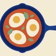
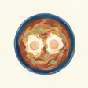
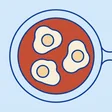
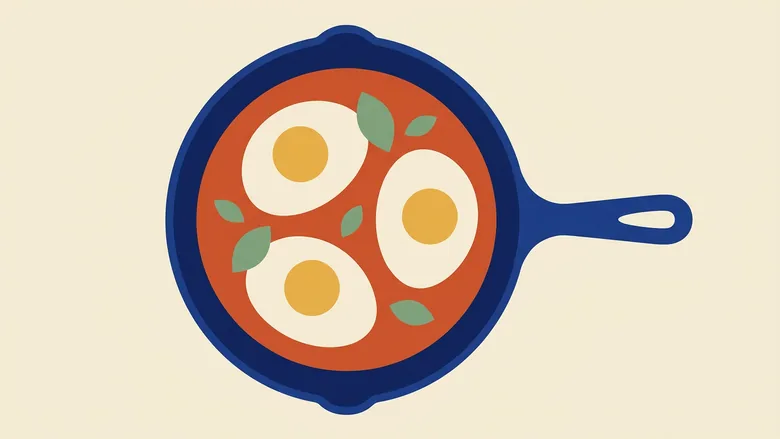
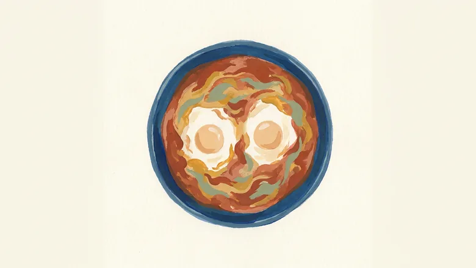
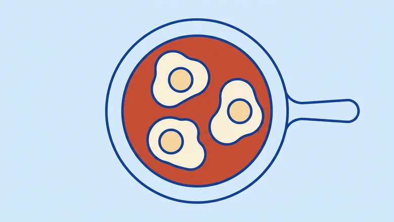

אותה מנה בשלושה סגנונות, בגדלים האמיתיים שבהם היא תופיע. שקשוקה נבחרה כמנת מבחן כי היא צבעונית ומוכרת — אם סגנון לא מצליח איתה, הוא לא יצליח עם אורז לבן.
זה הגודל בבורר המנות, והוא מה שתראה עשרות פעמים בשבוע. התמונה נחתכת לריבוע מהמרכז. משמאל בגודל אמיתי, מימין באותה תמונה מוגדלת פי שניים כדי לראות מה נשאר ממנה.

א · וקטור שטוח
ב · גואש
ג · קו על אריחכרטיס היום ושורת הבורר, בטוקנים ובפונטים האמיתיים. השורה השנייה בכל עמודה נשארה עם אריח האות בכוונה — כך נראית מנה שאתה מוסיף בעצמך ואין לה איור.
צורות גדולות בפלטה של האפליקציה. הקובלט של המחבת הוא בדיוק צבע הזהות, והחרס הוא צבע הפעולה.

היום · ערב
שקשוקה
25 דק׳ · קל
מרקם מכחול ונייר, הכי מזמין מהשלושה כשמסתכלים בגדול. גם הכי קשה לשלוט בו על פני 39 מנות.

היום · ערב
שקשוקה
25 דק׳ · קל
הכי קריא והכי עקבי — קל לייצר 39 כאלה שנראים כמו סדרה אחת. גם הכי קר.

היום · ערב
שקשוקה
25 דק׳ · קל